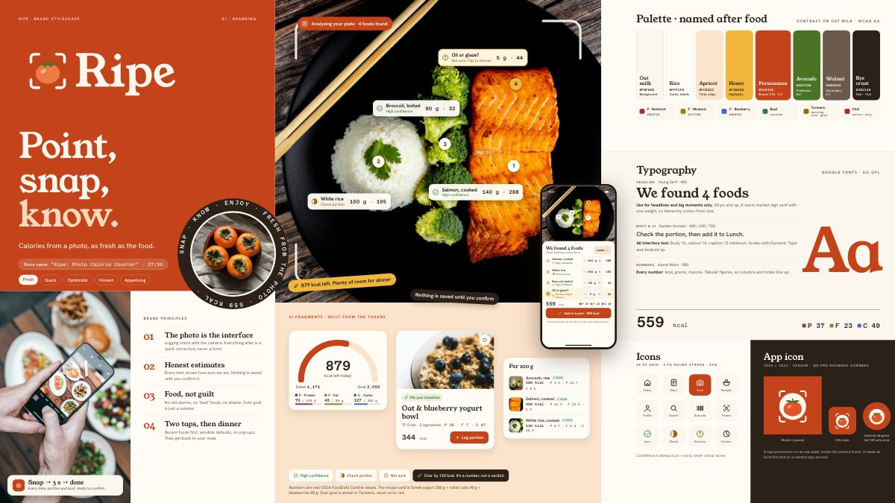
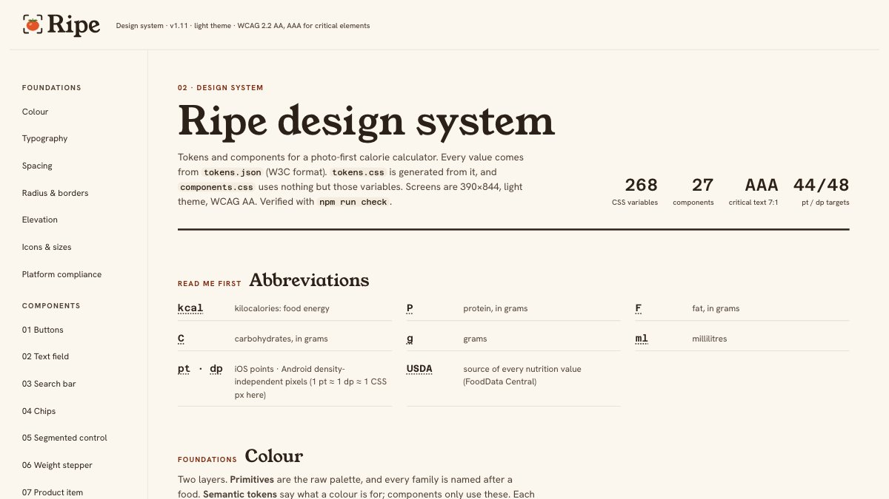
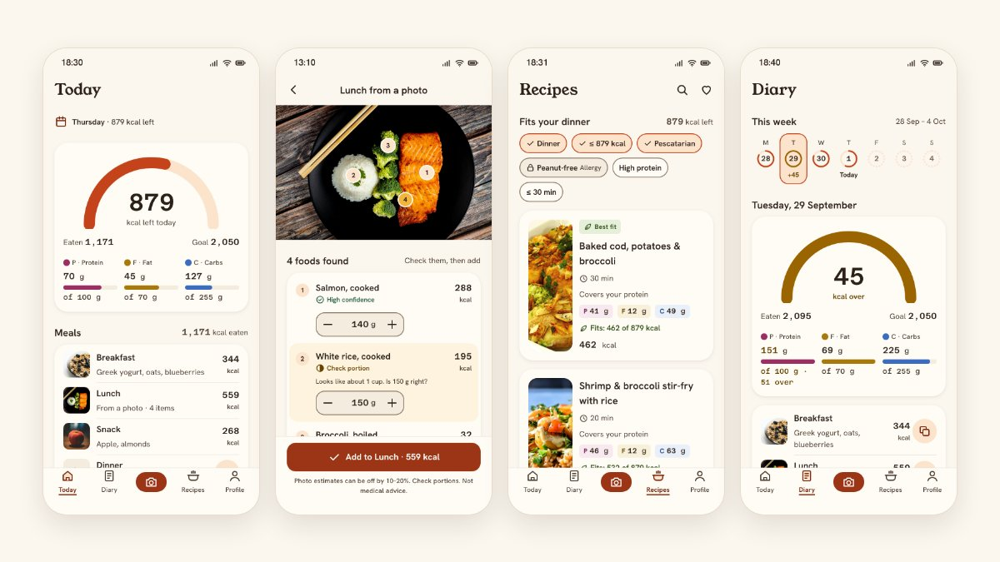
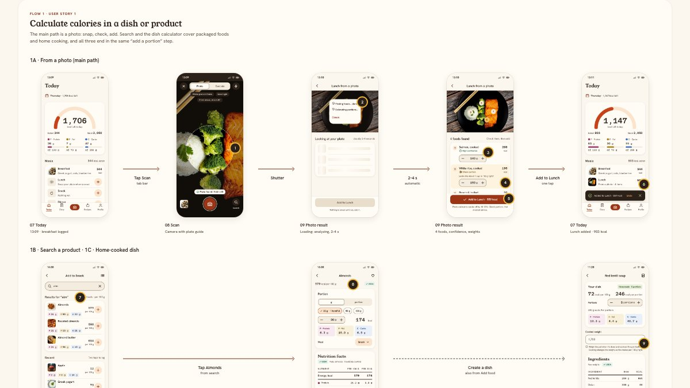

Deliverables

01 · BrandingBrand stylescape
Name, logo, colours named after food, type and imagery. Chosen from 2 directions.

02 · Design systemTokens and 27 components
Every state shown and documented. WCAG 2.2 AA, with AAA (7:1) for calories and macros.

03 · PrototypeClickable prototype
16 screens, 46 states at 390 × 844 in a phone frame. Tap through a flow, or pick any screen by flow.

03 · FlowsFlows board
Onboarding, both user stories, preferences and Diary, with 34 annotated UX decisions.
Documents
- ResearchMyFitnessPal, Yazio, Lifesum and FatSecret → 5 insights
- Brand briefAudience, personality, why these colours and fonts
- Design system READMEComponents, WCAG contrast table, changelog
- User flows specEvery screen: purpose, content, states
- Figma fileAll 46 screens as editable layers, with tokens as variables (view only; how it was made)
- How I worked with Claude CodeEvery prompt, verbatim, and what came out of it
- Repository on GitHubSource, tools and checks
Video walkthrough
A walkthrough of the stylescape, the design system and the prototype.